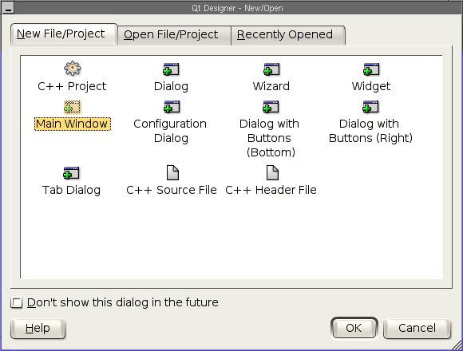
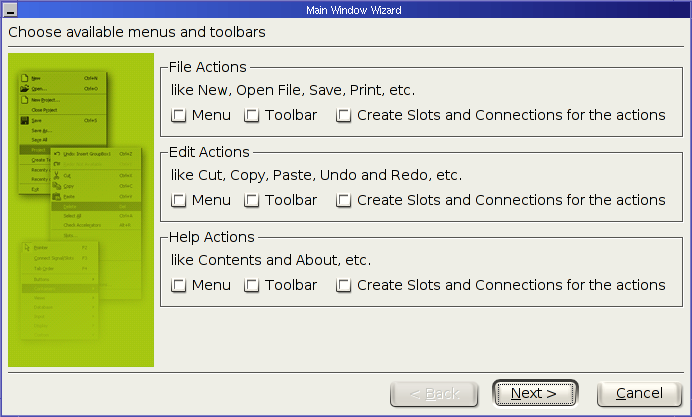
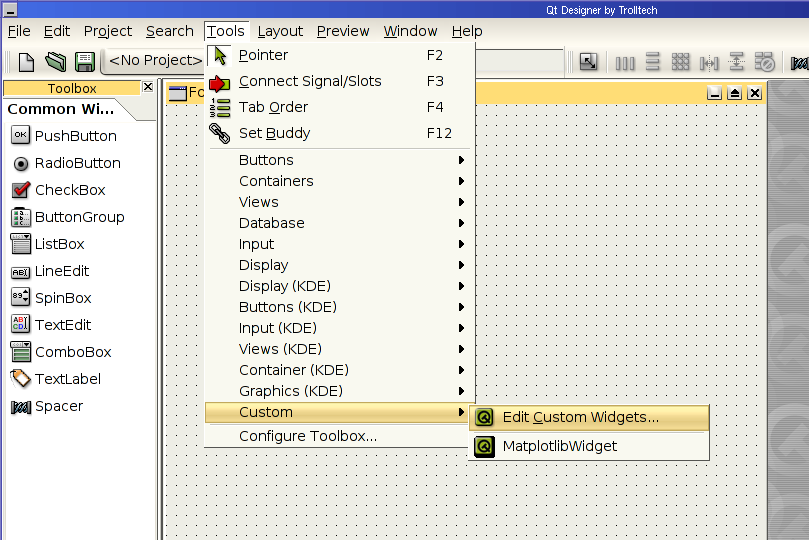
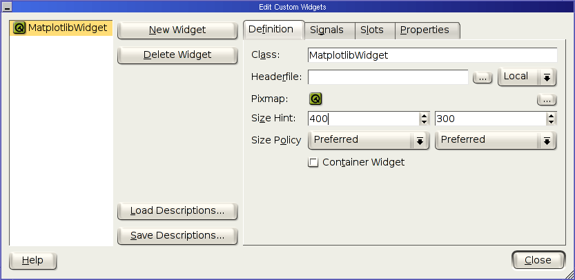
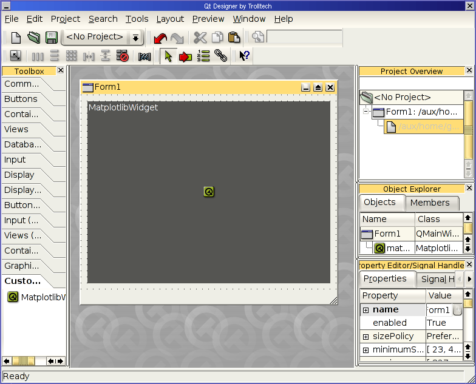
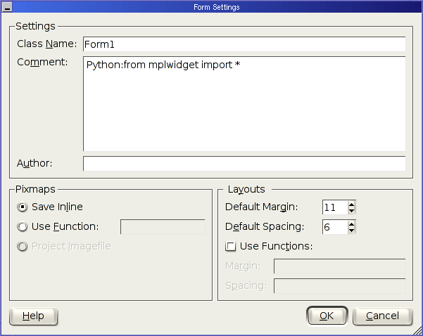
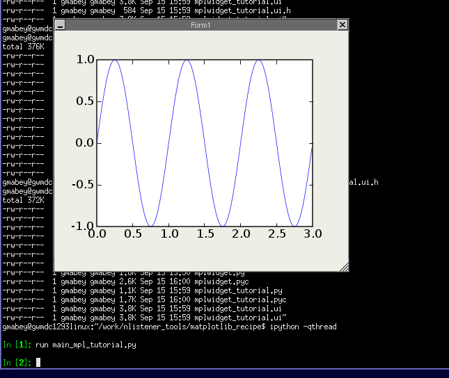
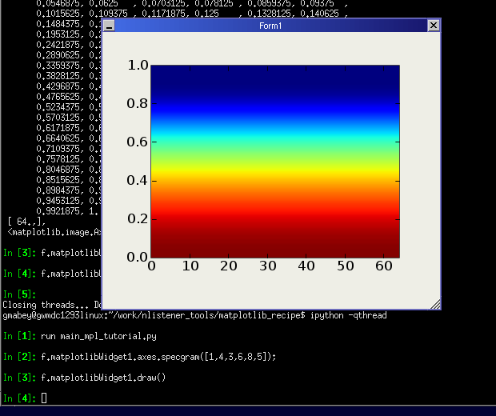

Example code for embedding Matplotlib in Qt applications is given at embedding_in_qt.py. This recipe extends that basic formula for integration with other powerful tools. In particular, we bring together the use of the GUI creation tool made by Trolltech (the creators of Qt) and the ability to interact with a running Qt application via IPython.
A basic tutorial for using Designer (along with the pertinent system requirements) has been posted by Alex Fedosov. Please review it before continuing.
However, for our purposes, we will create a much simpler design in Designer.
Open Designer, and create a new “Main Window”:
When the wizard appears, remove all of the menus and toolbars that it suggests to generate:
Now add a custom widget to your project as:
Give this new widget the name of and set the size to 400, 300:
The should now appear in your toolbox. Click on it and then click in the Form that has been created. Also perform “Lay Out Vertically (Ctrl+L)” and “Adjust Size (Ctrl+J)” operations on the Form (without the widget being selected) if you know what those are. At this point your workspace might look something like this:
Now we need to get the “import” setting put in, as specified here:
Of course, you’ll also need the file that will then be included: .. image:: Matplotlib(2f)Qt_with_IPython_and_Designer_attachments/mplwidget.py.
The product of all of these operations in Designer is a .ui file. So, save the Form we’ve been working on and call it “mplwidget_tutorial.ui”.
One of the things that can mess this up is that Designer automatically increments the names given to widget instances (Form1, Form2, matplotlibWidget1, matplotlibWidget2, etc.) so if those don’t match up with what I used, you may need to make some logical adjustments to your procedure.
Now, we use the tool pyuic (included with PyQt to convert this .ui file into a Python class. This is easily accomplished with:
pyuic mplwidget_tutorial.ui > mplwidget_tutorial.py
Go ahead and view the contents of mplwidget_tutorial.py and compare it with what I got. You can also look at my .. image:: Matplotlib(2f)Qt_with_IPython_and_Designer_attachments/mplwidget_tutorial.ui
Now, it’s nice to have the invocation written up in its own .. image:: Matplotlib(2f)Qt_with_IPython_and_Designer_attachments/main_mpl_tutorial.py file, which is amazingly short:
from mplwidget_tutorial import *
f = Form1()
f.show()
Then, we want to start ipython and instantiate the window. In order to succeed in this endeavor, there are a bunch of packages (each with minimum version requirements) you’ll need, like python2.3-ipython, python2.3-qt3, and so on. The most important one, though, is ipython >= 0.6.13 (I think). From that version on, there is a super-great feature that adds an invocation switch that starts a QApplication in a separate thread, in such a way that the ipython prompt can still interact with it.
So, if the above command doesn’t work for you, check the version. It may also be invoked as “python2.3-ipython” depending on your configuration.
Okay, now comes the coolest part: the interaction.
And, it is very easy to go back to Designer, add a button, re-run pyuic, and you’ve got another version.
CategoryCookbookMatplotlib